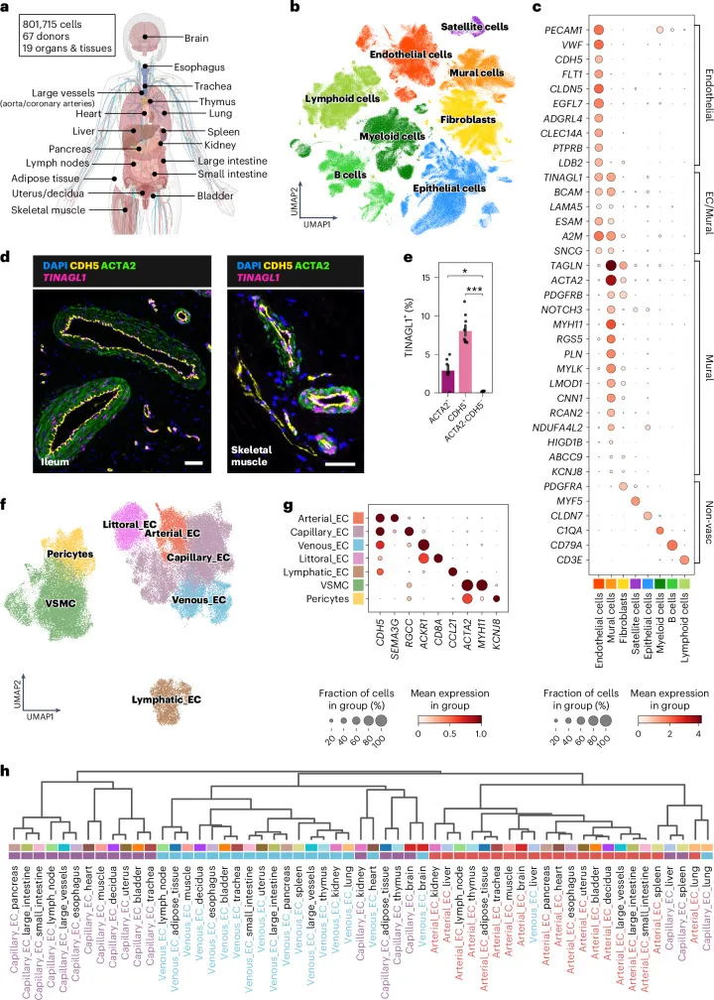
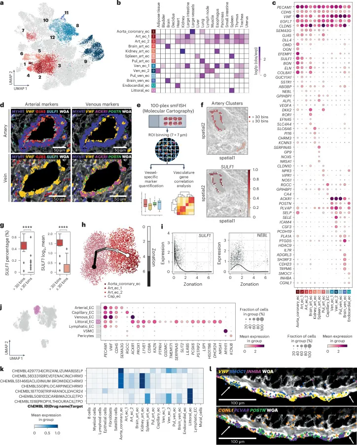
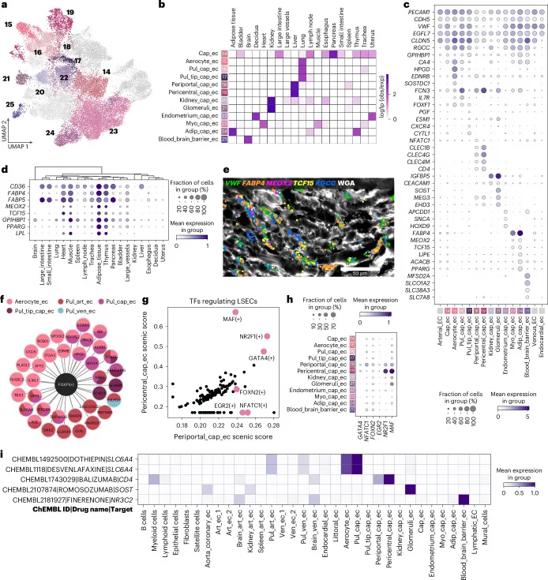
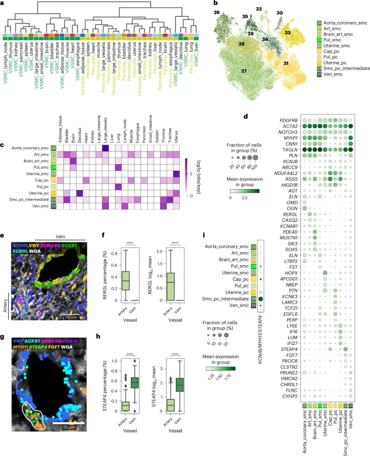
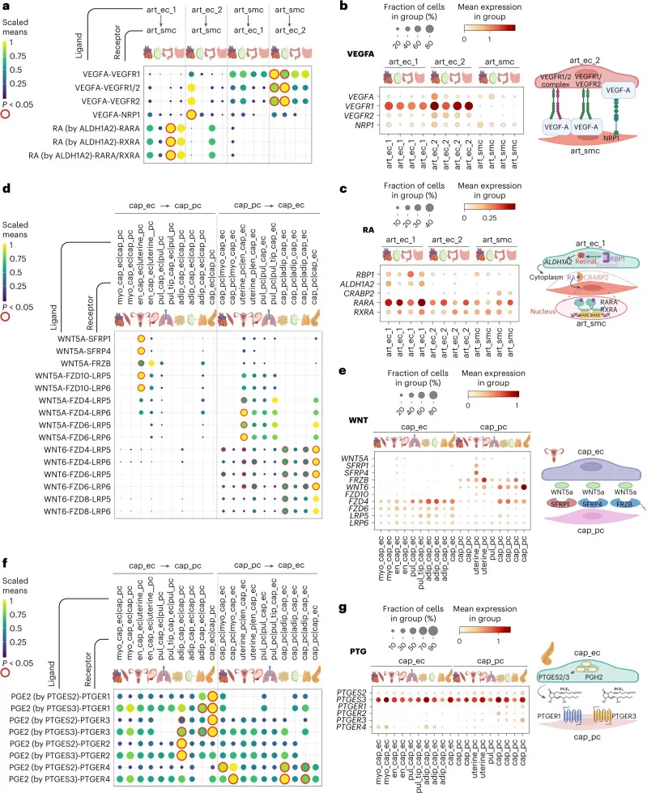

《Nature Medicine》|八十万细胞人类血管细胞图谱
原文：https://mp.weixin.qq.com/s?__biz=MzAwMzIzOTk5OQ==&mid=2247528980&idx=1&sn=8da61b6158ecafeaf24795ad16c90c39&chksm=9b3c0b44ac4b82522d232ddbbd4779d782774347103ee52ac4fd8a8f0f478fb99271163a14b9#rd 合集：文献速递
一、写在前面
本次分享的是2024年11月发布于《Nature Medicine》（IF=58.7）的文章****，该文系统解析了 人体的血管系统细胞类型组成，可以说是为所有组织器官类型scRNA-seq研究均做出了贡献，没准你现在研究的课题就可以参考这部分数据。感兴趣的同学可以看看原文：Sam N. Barnett, Ana-Maria Cuiba, Lu Yang,et al,."An organotypic atlasofhuman vascular cells" ，Nature Medicine 30,3468-3481(2024),DOI: 10.1038/s41591-024-03376-x.(原文链接：https://www.nature.com/articles/s41591-024-03376-x）血管系统是人体循环系统的支柱，由内皮细胞 （ECs）和壁细胞 （如血管平滑肌细胞VSMCs 和周细胞 ）共同构成，覆盖了人体巨大的表面积，宛如一张遍布全身的“生命网络”，负责血液与组织之间的物质交换。尽管我们知道不同器官的血管在功能上千差万别，但这些差异背后的分子机制却长期隐藏在迷雾之中。这项研究通过整合来自19个器官和组织 的单细胞转录组数据 （涉及62位供体、166个样本，总计约 80万个细胞），绘制了一幅详尽的血管细胞图谱，识别出42种 独特的血管细胞状态。这幅图谱不仅展示了血管细胞在不同器官中的特异性特征，还揭示了它们如何通过分子信号相互协作，为我们理解血管疾病的根源以及设计精准治疗打开了一扇窗。 如果需要数据分析指导 、生信热点全文复现 、自测数据个性化分析 辅导、常态化实验学习，欢迎联系客服微信[Biomamba_zhushou]
二、主要内容
1.人体血管系统的整合多器官图谱
为了系统揭示健康成人体内的血管细胞异质性，研究团队整合了来自19个器官和组织 的单细胞数据集，构建了一幅全面的血管系统图谱 （见图 1a 以及补充表 1 和 2）。通过严格的质量控制（QC），他们成功筛选并整合出约80万个细胞 的全局数据集，涵盖67位供体和166个样本 （见图 1b 和补充数据图 1）。采用单细胞变分推理（scVI）算法，有效校正技术误差，同时保留器官间的生物学差异（见补充数据图 2 和 方法）。基于此，他们精准划分出主要细胞类型 ，包括内皮细胞 （ECs）、壁细胞 、上皮细胞 、成纤维细胞 、免疫细胞 和肌肉卫星细胞 （见图 1b,c 和补充表 4）。其中，ECs 以CDH5、VWF 和PECAM1 的表达为标志（尽管PECAM1也在部分免疫细胞中检测到），并伴随广泛标记物如EGFL7 （血管生成相关）、TMEM88 （Wnt抑制剂）和CLEC14A （肿瘤血管生成靶点）（见图 1c）。壁细胞 则以血管平滑肌细胞（VSMCs） 和周细胞 标记物PDGFRB、NOTCH3、ACTA2、MYH11和RGS5 为特征，同时表达收缩调控基因MYLK和LMOD1 （见图 1c）。
他们观察到，TINAGL1 （整合素和EGFR结合分子）和ESAM （内皮细胞特异性粘附分子）在两类细胞中均有表达，前者促进体外血管形成，后者增强细胞间粘附（见图 1c）。进一步分析显示，BCAM （基底细胞粘附分子）及其配体LAMA5 （层粘连蛋白-α5）的共表达，提示ECs与壁细胞间存在紧密的粘附网络（见图 1c）。为验证这些发现，研究者们利用单分子荧光原位杂交 （smFISH）技术，确认了 EGFL7专属ECs表达、MYLK定位于VSMCs，而TINAGL1在两者中均有分布（见图 1d,e 和扩展数据图 1a）。这一验证不仅增强了数据的可靠性，还直观揭示了ECs与壁细胞在功能上的协同作用。
随后，研究团队通过UMAP可视化技术 ，清晰展示了全局数据中血管细胞与其他细胞类型的分布模式（见图 1b,f）。他们还利用点图和分层聚类分析 ，详细勾勒出血管隔室中主要细胞状态的标记基因特征，以及各器官ECs亚群的异质性（见图 1g,h）。这一系列发现表明，血管细胞的分子身份和功能状态在不同器官间差异显著 ，为后续研究提供了坚实的数据基础。总之，这幅多器官血管细胞图谱的绘制，不仅全面描绘了健康成人血管系统的细胞多样性，还为探索血管相关疾病的分子机制提供了宝贵的资源。

图1
2.动脉内皮细胞的过渡性特征
为了深入探索内皮细胞群体的多样性，研究团队以精细的分辨率表征了42种血管型和器官型血管细胞状态 ，涵盖了从大直径到小直径血管的特征（见扩展数据图 1e,f，补充数据图 5 以及补充表 6）。他们聚焦于动脉内皮细胞（ECs） ，成功识别出三种血管型状态 ：源自主动脉和冠状动脉的簇（aorta_coronary_ec）以及两种组织间共享的群体（art_ec_1和art_ec_2）（见图 2a,b）。研究者们发现，aorta_coronary_ec和art_ec_1高表达BGN、ELN和SULF1 ，这些基因编码细胞外基质（ECM） 成分和调节因子，支持高压动脉中的血管壁结构与稳定性（见图 2c）。更进一步，art_ec_1和art_ec_2展现出Notch通路 稳态调节因子HEY1 和DLL4以及SEMA3G 的表达，而aorta_coronary_ec则富集其他ECM蛋白基因，如富含小亮氨酸的蛋白聚糖（SLRPs）OGN 和OMD ，以及糖蛋白EFEMP1 ，这些分子在基底层中促进细胞-基质相互作用并提供结构支持（见图 2c）。值得注意的是，art_ec_2还表达NEBL 和毛细血管标记物GPIHBP1 ，这提示其可能代表一种中间小动脉表型 （见图 2c）。
那么这三种动脉ECs状态是否与血管大小相关？研究团队采用了高分辨率、高度多重的单分子荧光原位杂交 （smFISH）技术（见扩展数据图 2a,b 以及补充表 7）。他们在亚细胞水平（7 × 7-µm bin）上发现，SULF1 在动脉ECs（GJA5和SEMA3G）中特异性表达，但在静脉ECs（ACKR1、SELE和PLVAP）中缺失，这一结果通过基因相关性分析得到了验证（见图 2d–f 和扩展数据图 2c,d）。更引人注目的是，通过对90个动脉样本的bin聚类发现，在较大动脉（ >30个bin）中SULF1的表达百分比和平均水平显著高于较小动脉（≤30个bin）（见图 2f,g 和扩展数据图 2e）。他们还通过低多重smFISH进一步确认了ELN和SULF1 在动脉ECs中的共表达（见扩展数据图 3a,b）。
为进一步验证这些状态的区域性差异，研究团队开展了轨迹推断分析 ，揭示出从aorta_coronary_ec 到art_ec_1、art_ec_2 再到capillary_ec 的连续过渡轨迹，与差异表达基因模块高度相关（见图 2h,i 和扩展数据图 3c–f）。他们注意到，SULF1 的表达沿区域轴逐渐降低，而NEBL 在art_ec_2中达到峰值。这一系列证据有力地证明，动脉ECs不仅在不同器官间共享共同特征，还沿动脉轴呈现出显著的标记物差异 ，为理解血管系统的动态适应性提供了全新的分子视角。

图2
3.动脉内皮细胞的器官特异性
研究团队通过深入分析，发现四种器官型动脉内皮细胞 （ECs）状态在特定器官中显著富集，分别对应肺 （pul_art_ec）、脑 （brain_art_ec）、肾 （kidney_art_ec）和脾 （spleen_art_ec）（见图 2a,b）。在肺动脉ECs （pul_art_ec）中，他们观察到血管舒张相关基因 的编码产物高表达，包括NPR3、VIPR1 以及NOS1 ，后者负责合成血管舒张剂一氧化氮（见图 2c）。这一特征与肺循环的低压和低阻力特性高度吻合。团队还注意到，Wnt抑制剂DKK2 在pul_art_ec 和脑动脉ECs （brain_art_ec）中均有表达，而brain_art_ec还特异性表达ROR1 ，一种非经典Wnt受体，与Wnt信号在脑血管系统发育和稳态中的关键作用相呼应。此外，他们发现先前在星形胶质细胞中报道的碳酸氢盐转运蛋白基因SLC4A4也映射到brain_art_ec，进一步凸显了脑ECs的独特分子身份 （见图 2c）。
对于肾动脉ECs （kidney_art_ec），研究团队识别到其表达输出小动脉标记物SLC6A6 ，以及调控剪切应力和血管通透性的PI16 ，还有血管舒张调节因子CHRM3和KCNN3 （见图 2a–c）。这一表达模式表明，肾动脉ECs具备微调血管张力的能力，这对于维持肾小球的血液过滤功能至关重要。至于脾动脉ECs （spleen_art_ec），其主要特征在于凝血因子相关基因 的富集，包括SERPINA5 （蛋白C抑制剂）、GP9 （糖蛋白IX）和NOX5 ，后者补充了此前关于NOX5在人脾ECs中表达的报道（见图 2b,c）。这些分子特征不仅揭示了脾ECs在凝血调控中的潜在作用，也为脾脏血管系统的特殊功能提供了分子依据。
通过这一系列分析，作者的团队清晰展示了动脉ECs在不同器官中的特异性分子特征 ，揭示了其如何适应各自器官的生理需求，为理解血管系统的器官特异性提供了重要见解。
4.静脉内皮细胞显示共享和器官型特征
通过细致分析，研究者表征了四种静脉内皮细胞（EC）群体 ，揭示了其共享与器官特异性特征。其中，一种群体（ven_ec_1）广泛存在于大多数器官中，并表达ACKR1、POSTN和PLVAP （见图 2a–c）。第二种静脉EC亚型（ven_ec_2）则在骨骼肌、脂肪组织和淋巴结中富集，发现其表达ICAM4和SELE ，这些基因编码白细胞粘附分子 ，以及促炎性因子 IL6（见图 2a–c）。他们推测，这一内皮可能已准备好参与免疫激活或运输，类似于免疫募集的小静脉ECs。
更进一步，研究团队还鉴定了两种器官型静脉EC （见图 2c）。在肺中富集的群体（pul_ven_ec）表达HDAC9 和IL7R ，且与先前报道一致，COL15A1 呈阴性。研究者们注意到，这一群体与脑静脉ECs （brain_ven_ec）共享前列腺素相关 的PTGDS 和PLA1A 表达。对于brain_ven_ec，他们发现其特征还包括G蛋白偶联受体ADGRL3 和SH3RF3 ，后者与全基因组关联研究（GWAS）中的迟发性阿尔茨海默病相关（见图 2c）。这一系列发现清晰展示了静脉ECs如何在不同器官中兼具共享特征与特异性功能 ，为理解其在免疫和器官特化中的作用提供了分子依据。
5.淋巴结中的淋巴内皮细胞显示器官型特征
深入探索发现，淋巴内皮细胞（LECs）因其携带淋巴液的功能，与血液内皮细胞显著区分开来，展现出独特的分子特征，包括PROX1、LYVE1和PDPN 的表达。他们进一步划分出七个亚群 ，其中淋巴毛细血管EC（cap_lec）在多个器官间富集（见扩展数据图 4a–c）。TFF3 （编码分泌蛋白三叶因子3）在所有器官的cap_lec 中均有表达，这一基因与乳腺癌中的淋巴管浸润密切相关。基于此，他们认为，应进一步探究TFF3 水平升高作为潜在转移预测因子的可能性。此外，研究团队发现其他LEC簇主要对应于淋巴结基础设施的亚型，与先前报道一致（见扩展数据图 4a–d）。这一发现不仅揭示了LECs的器官特异性特征 ，还为研究淋巴系统在疾病中的作用 提供了新的分子线索。
6.血窦内皮细胞共享静脉和淋巴内皮细胞特征
研究团队深入分析发现，脾脏血管系统具有独特的开放循环特征 ，其中开放的微动脉流入红髓，红细胞通过脾脏静脉窦进行过滤。他们进一步揭示，血窦内皮细胞 展现出细长形态并具备吞噬特性 ，其分子特征包括泛EC标记物PECAM1 和VWF ，以及先前报道的T细胞受体CD8A 和FHOD1 的表达，这一结果与之前的免疫染色和qRT-PCR数据高度一致（见图 2j 以及扩展数据图 4e,f）。他们还观察到，静脉EC标记物ACKR1 与淋巴EC标记物PROX1 和LYVE1 在此共表达，提示了血窦ECs具有混合的静脉-淋巴表型。
为了弄清血窦ECs的调控机制，研究团队利用SCENIC方法 预测了脾ECs中细胞状态特异性的转录因子及其下游靶基因。他们发现，NR5A1 （类固醇生成因子1）在littoral_ec和spleen_art_ec中占据主导地位，成为最重要的转录因子 （见图 2c,j 以及扩展数据图 4g,h）。值得一提的是，NR5A1 在小鼠脾脏血管系统发育和红细胞过滤中至关重要，而其突变会导致人类无脾症，这一发现表明它在脾脏血管稳态中扮演关键角色。此外，他们还识别出血窦细胞的其他转录因子，如JDP2 （编码NR5A1结合蛋白）和MAFB ，后者通常在组织驻留巨噬细胞中表达，与血窦ECs的吞噬样表型相符（见扩展数据图 4g）。这些结果清晰地凸显了脾脏血管细胞间的器官特异性特征 ，为理解其在免疫和过滤功能中的分子基础提供了重要见解。
7.心内膜内皮细胞是心脏的器官型群体
研究团队发现，心内膜内皮细胞 （endocardial_ec）排列于心腔内部，在瓣膜和心小梁的形成中扮演至关重要的角色。他们确认了心内膜ECs的特征标记物SMOC1 和INHBA ，以及通常在静脉ECs中表达的基因PLVAP和POSTN 的显著表达（见图 2c,l 以及扩展数据图 2g）。更值得注意的是，研究者们还在肺动脉ECs中检测到NPR3 的表达，这一发现提示 NPR3的表达可能沿心血管轴呈现连续性。通过SCENIC分析 ，团队进一步揭示，endocardial_ec富集GATA4 和GATA6 ，这些基因编码参与流出道和房室管形态发生的心脏生成转录因子 （见扩展数据图 3g）。研究者们指出，这些转录因子在心内膜中的表达不仅与其在发育过程中的作用密切相关，还可能表明它们在成人阶段维持心内膜稳态功能中具有潜在贡献。这不仅凸显了心内膜ECs作为心脏器官型群体的独特分子身份 ，也为理解其在心脏发育与功能维持中的作用 提供了重要线索。
8.推断动脉、静脉和心内膜 EC 中的药物靶点
利用drug2cell工具 ，研究者系统预测了不同血管床中潜在的细胞药物靶点 。他们发现，SELP 编码的P-选择素 是人源化单克隆抗体抑制剂crizanlizumab 的靶点，广泛存在于主动脉、冠状动脉、肺动脉ECs以及静脉和心内膜ECs中（见图 2k）。以镰状细胞贫血为例，crizanlizumab主要用于预防微血管阻塞，但研究者们提出，这一数据表明其作用范围可能扩展至其他血管床。
进一步分析显示，CHRM3 （编码毒蕈碱乙酰胆碱受体3，即M3R）是M3R激动剂毛果芸香碱 的靶点，适用于治疗青光眼、眼高压和口干症，同时也是拮抗剂revefenacin 和aclidinium bromide 的靶点，用于慢性阻塞性肺病管理。研究团队揭示，肾脏、主动脉和冠状动脉ECs可能是这些药物的细胞靶点 （见图 2k）。这一发现提供了通过调节内皮一氧化氮释放来评估这些药物作为血管张力调节剂的潜在机会。值得注意的是，CHRM3与高血压及内皮损伤后的血管收缩相关，这一特性与在主动脉和冠状动脉ECs中的富集一致（见图 2c）。研究者们还关注了triparanol ，一种DHCR24 抑制剂和曾用于降胆固醇的药物，因副作用被撤回。通过drug2cell分析，他们强调triparanol对DHCR24的抑制可能影响血窦细胞功能 （见图 2k）。同样，卡比马唑和丙基硫氧嘧啶 ——两种针对甲状腺过氧化物酶（TPO ）的甲状腺功能亢进治疗药物——被预测为靶向血窦细胞和spleen_art_ec（见图 2k）。他们观察到，卡比马唑的活性形式通过增加氧化应激对大鼠脾脏等器官造成细胞损伤，而丙基硫氧嘧啶则与脾肿大相关，这提示这些副作用可能由脾ECs失调介导。
通过这一系列分析，研究团队对大血管ECs的血管型和器官型多样性进行了定义 ，不仅提供了对细胞特异性药物靶点 的深入洞察，还突出了药物重定位 的潜在候选者，并将机制推断与特定细胞状态紧密联系起来，为未来药物开发与优化提供了宝贵依据。
9.微血管内皮细胞的器官型特化
通过亚聚类分析 ，研究者将毛细血管内皮细胞 （ECs）细分为12种状态，其中一种状态（cap_ec）在大多数器官中共享，而其余状态则表现出显著的器官特异性 （见图 3a,b 以及补充表 6）。

图3
10.肌肉和脂肪毛细血管 EC 中的脂肪酸代谢
他们发现了一类仅限于心脏和骨骼肌 的群体（myo_cap_ec）表达对脂肪酸摄取 至关重要的基因，如FABP4和FABP5 （编码脂肪酸结合蛋白）以及转录因子MEOX2 和TCF15 ，这些基因诱导CD36 和LPL （脂蛋白脂肪酶）以促进跨ECs的脂肪酸转运，表明其支持肌肉组织高能量需求的角色（见图 3b–e 以及扩展数据图 5a）。此外，脂肪组织富集的群体（adip_cap_ec）共享这些特征，并额外表达脂肪生成相关基因ACACB 和PPARG ，其中还包含来自胸腺的细胞，可能是衰老过程中胸腺脂肪生成的反映（见图 3a–d）。
11.肺微血管内皮细胞包括三种细胞状态
三种肺微血管ECs群体 被研究者所定义：肺泡细胞 （aerocyte_ec）、肺毛细血管 （pul_cap_ec）和顶端细胞 （pul_tip_cap_ec）（见图 3a–c）。他们观察到，pul_cap_ec和aerocyte_ec共享ADRB1 （肾上腺素/去甲肾上腺素反应性标记物）、SLC6A4 （血清素相关）和VIPR1 （血管活性肠肽受体1）的表达，而pul_cap_ec与人肺一般毛细血管特征重叠，表达IL7R和FCN3。肺泡细胞 则作为气体交换前沿，表达EDNRB、CA4、SOSTDC1和HPGD（前列腺素相关），提示类花生酸通路可能降低肺血管压力（见图 3c）。通过drug2cell预测，SLC6A4 表达的ECs可能是SNRIs （如多塞平）的靶标，这表明其与呼吸道相关副作用有关（见图 3i）。SCENIC分析 揭示，FOXF1 调控所有肺ECs，其突变与肺疾病相关，而pul_tip_cap_ec表达PGF、CXCR4 等血管生成标记物 ，提示其具有祖细胞潜力 （见图 3f）。
12.肾小球内皮细胞显示出独特的分子特征
肾脏富集两种微血管ECs：glomeruli_ec和kidney_cap_ec。glomeruli_ec表达EHD3（参与窗孔形成）和MEG3（与糖尿病肾病相关），还表达SOST （Wnt抑制剂），可能防止肾小球钙化，并被预测为romosozumab靶标 （见图 3i）。kidney_cap_ec与glomeruli_ec共享IGFBP5 ，但独有RGCC ，提示其代表肾小管周围毛细血管 （见图 3c）。
13.肝毛细血管 EC 群体的区域性
肝血窦ECs 分为门静脉周围 （periportal_cap_ec）和中央静脉周围 （pericentral_cap_ec）两种群体。中央静脉ECs 富集CLEC1B、CLEC4G 等C型凝集素基因，与免疫调节相关，而门静脉ECs 表达MGP、AQP1 等广泛标记物（见图 3c）。drug2cell预测其为ibalizumab靶标，SCENIC分析显示 MAF、NR2F1 等转录因子在中央静脉ECs中更活跃（见图 3g,h）。** **
14.子宫包含子宫内膜特异性毛细血管 EC
子宫内膜ECs （endometrium_cap_ec）表达APCDD1、SNCA和HOXD9 ，SNCA 调节Weibel–Palade 小体释放，空间转录组学 验证了其定位（见图 3a–c）。
15.脑毛细血管 EC 显示血脑屏障的特征
脑富集的blood_brain_barrier_ec 也被表征出来，表达SLCO1A2、SLC38A3 等血脑屏障标记物 及MFSD2A ，drug2cell预测其为finerenone靶标 （见图 3i）。团队总结道：器官型微血管ECs的转录特征与组织功能高度相关 ，并指出人类VWF表达与小鼠差异（见图 2c）。
16.VSMC 和周细胞表现出血管型特征
血管平滑肌细胞 （VSMC）形成动脉和静脉的肌肉层中，动脉壁较厚以承受高压，而周细胞 则围绕毛细血管形成不连续层，为微血管系统提供稳态和功能支持。通过跨器官的分层聚类分析，观察到VSMC和周细胞在转录上具有高度相似性（见图 4a），这一结果表明，与内皮细胞（ECs）类似，壁细胞的特化主要由血管型线索驱动。
研究者们通过子集分析，鉴定出10个VSMC和周细胞群体 （见图 4b–d 以及补充表 6）。动脉特异性VSMC （art_smc）以表达RERGL （肿瘤抑制因子）、CASQ2 （与钙储存和血管收缩相关）和钾通道KCNAB1 为特征（见图 4d），多重smFISH 验证了 RERGL在动脉VSMC中的特异性表达及其在静脉VSMC中的缺失（见图 4e,f）。值得注意的是，主动脉 和冠状动脉VSMC （aorta_coronary_smc）表达ECM相关基因ELN、OGN和OMD，与内皮对应物一致，支持壁结构和机械传感（见图 2c 和 4c,d）。静脉VSMC（ven_smc）则富集HMCN2和FLNC（filamin C），与小鼠研究相符（见图 4d）。
在周细胞隔室中，一般毛细血管周细胞（cap_pc）在器官间共享，以ABCC9、KCNJ8 和RGS5 表达及MYH11缺失 为特征，并表达AGT （血管紧张素原），参与血压调节（见图 4c,d）。中间表型 （smc_pc_intermediate）同时具备VSMC 和周细胞 特征（PDGFRB、ACTA2、MYH11），并表达STEAP4 （炎症相关），smFISH显示其在静脉MYH11+细胞中表达更高（见图 4g,h）。scRNA-seq分析进一步揭示，约20%的STEAP4+细胞共表达MYH11和KCNJ8，支持壁细胞跨血管轴连续性（见图 4i）。其他标记物如PROCR、FGF7和CHRDL1也表明其功能多样性（见图 4d,g）。

图4
17.肺、子宫和大脑包含器官型壁细胞
整合分析表明，肺VSMC （pul_smc）和周细胞 （pul_pc）具有肺特异性特征，共享TCF21 （肺发育相关）、PERP 和EGFL6 表达（见图 4b–d）。子宫和蜕膜包含独特群体（uterine_pc和uterine_smc），其中uterine_pc 表达IFI6、IFI27 和LUM ，可能支持组织重塑，uterine_smc 表达APCDD1、HOPX 和NREP ，参与血管重塑（见图 4d）。脑动脉VSMC （brain_art_smc）表达PDE4D （收缩相关）和SIK3 （增殖调节），凸显了壁细胞的异质性（见图 4c,d）。
18.血管细胞状态在单核数据中是可重复的
通过整合七个器官的单核数据与单细胞数据 ，研究团队利用CellTypist自动注释 ，验证了血管细胞状态的可重复性及标记物表达一致性 （见扩展数据图 6 和 7）。
19.血管型和器官型 EC-壁细胞信号传导
利用来自心脏组织的空间转录组学 ，研究团队绘制了内皮细胞（ECs）与壁细胞可能的相互作用网络（见扩展数据图 8a）。他们证实了预期的细胞-细胞共定位关系 ，如动脉ECs与动脉VSMC、毛细血管ECs与周细胞，以及静脉隔室中的ven_ec_1和动静脉壁龛中的smc_pc_intermediate（见扩展数据图 8b）。通过手动注释区域的优势比分析 ，进一步验证了这些结果（见扩展数据图 8c–f）。值得注意的是，心内膜ECs在静脉中也表现出富集 ，这可能源于其与静脉ECs转录谱的部分重叠。
通过深入分析Notch通路 ，发现其对于血管形成和稳定的具有关键作用，具体涉及JAG或Dll配体与相邻细胞上Notch受体的相互作用。他们发现，NOTCH2 依赖性信号在动脉VSMC中富集，NOTCH3 则普遍存在于所有血管中，但具器官特异性，如子宫静脉中缺乏NOTCH3信号（见补充数据图 7a）。相反，NOTCH1和NOTCH4信号主要集中于动脉ECs。更引人注目的是，Notch信号在静脉和微血管ECs中展现出器官特异性 ，例如JAG1/2-VASN 相互作用可能调节人类血管功能，与小鼠VSMC中vasorin的血压调节作用相符（见补充数据图 7a）。此外，纤维连接蛋白介导的相互作用在动脉中均匀富集，而在静脉和毛细血管中具组织特异性；胶原蛋白依赖性相互作用则主要限于静脉和毛细血管，反映了基底膜组成的差异（见补充数据图 7b 和 8）。
在血管型LR相互作用中，研究者们识别出心脏和淋巴结中art_smc到art_ec_2的VEGFA-VEGFR1/2信号，表明其通过调节ECs存活和血管舒张维持动脉稳态（见图 5a,b）。此外，VEGFA-NRP1 信号在心脏动脉ECs 到VSMC 中富集，在小鼠中被证明对血管发育和VSMC功能至关重要 。他们还预测，大肠中动脉ECs（art_ec_1）通过RA 信号传递至VSMC，提示其在肠道动脉稳态中具有器官型功能（见图 5a,c）。
在器官型相互作用方面，研究团队发现心脏VSMC 通过NGF-SORT1 信号与动脉ECs通讯，参与动脉重塑（见扩展数据图 9a,c）。在子宫内膜微血管系统中，他们预测出AR 信号，涉及AR 及睾酮生成酶 （SRD5A3和HSD17B12），支持子宫内膜增殖和修复，其失调可能导致子宫相关疾病（见扩展数据图 9d,e）。此外，WNT5A 信号在子宫内膜毛细血管中富集，可能助力月经周期组织重塑，而WNT6 信号则更广泛地从周细胞传递至ECs （见图 5d,e）。
研究者们还描述了前列腺素依赖性通讯的器官型差异，在胰腺中 PTGER1和PTGER3信号从ECs传递至周细胞，而在肌肉和脂肪中 PTGER4信号更显著（见图 5f,g）。总的来说，这些微血管LR相互作用证明了血管型和器官型差异，反映了ECs与壁细胞对微环境的适应能力 。

图 5
三、最后聊聊
这项研究通过绘制人类血管细胞的器官型图谱 ，为我们呈现了一幅血管生物学的壮丽画卷。它不仅系统梳理了42种血管细胞状态 ，还揭示了这些细胞如何在不同器官 中各司其职、相互协作 。通过高分辨率的空间技术和计算分析，研究者深入挖掘了ECs 和壁细胞 的分子特征及其信号网络 ，为理解血管疾病的发生提供了宝贵洞见。比如预测的药物靶点可能为药物开发和副作用研究指明方向。在此，我们提出畅想，未来若能纳入更多器官和疾病相关数据，将进一步让这幅宏大的图谱成为精准医学 的“导航仪 ”，助力血管生物学迈向新的高度。
四、学习手册
对scRNA-seq分析及联合分析感兴趣的同学可参考：
scRNA-Seq学习手册Seurat V5更新版生信基地122篇单细胞教程全索引25年最新视频|《手把手教你做scRNA-seq数据基础分析》
如何联系我们

 留一个领取资料、免费两周学习版服务器的微信号[Biomamba_zhushou]，方便各位随时交流。同时我们也构建了交流群矩阵，欢迎大家入群讨论。
留一个领取资料、免费两周学习版服务器的微信号[Biomamba_zhushou]，方便各位随时交流。同时我们也构建了交流群矩阵，欢迎大家入群讨论。
大家可以阅读完这几篇之后添加给生信入门初学者的小贴士 如何搜索公众号过往发布内容
已有生信基地联系方式的同学无需重复添加

 您点的每个赞和在看，我都认真当成了喜欢
您点的每个赞和在看，我都认真当成了喜欢